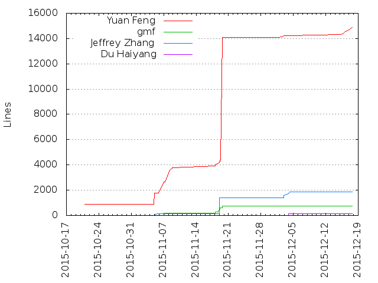
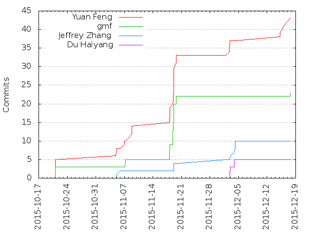

Authors
| Author | Commits (%) | + lines | - lines | First commit | Last commit | Age | Active days | # by commits |
|---|
| Yuan Feng | 14 (66.67%) | 3762 | 934 | 2015-10-20 | 2015-11-08 | 18 days, 19:33:28 | 4 | 1 |
| gmf | 5 (23.81%) | 164 | 5 | 2015-10-20 | 2015-11-07 | 17 days, 4:19:46 | 2 | 2 |
| Jeffrey Zhang | 2 (9.52%) | 130 | 50 | 2015-11-04 | 2015-11-05 | 18:02:11 | 2 | 3 |


| Month | Author | Commits (%) | Next top 5 | Number of authors |
|---|
| 2015-11 | Yuan Feng | 9 (69.23% of 13) | gmf, Jeffrey Zhang | 3 |
| 2015-10 | Yuan Feng | 5 (62.50% of 8) | gmf | 2 |
| Year | Author | Commits (%) | Next top 5 | Number of authors |
|---|
| 2015 | Yuan Feng | 14 (66.67% of 21) | gmf, Jeffrey Zhang | 3 |
| Domains | Total (%) |
|---|
| columbia.edu | 19 (90.48%) |
|---|
| gmail.com | 2 (9.52%) |
|---|